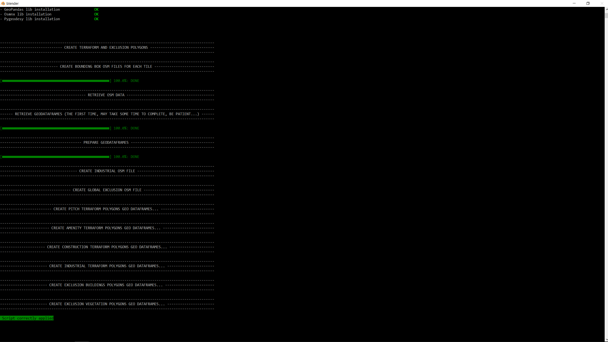

Create the terraform and exclusion polygons for the MSFS scenery project¶
Once the photogrammetry tiles have been optimized, GEDOT can automatically generate the terraform and exclusion polygons for the project.
Exclusion polygons
GEDOT produces two types of exclusion polygons:
- exclusion building polygons: exclude the Blackshark.ai generated buildings to avoid conflicts between those AI buildings and the photogrammetry ones.
- exclusion vegetation polygons: preserve coastal aspects (beaches, shores), thanks to vegetation exclusions polygons that cover the water and the shores.
Terraform polygons
The terraform polygons are created, but not enabled. When enabled, they can be used to fix some specific z-fighting issues between the MSFS original ground, and the photogrammetry tile surface.
All you have to do is to select Google Earth Decoder Optimization Tools > 3. Create the terraform and exclusion polygons for the scenery in the top menu.
Set up the creation of terraform and exclusion polygons for the project¶
- (optional) indicate the name of the city where the airport is located in the field
Airport city(ex.: Arcachon). You can also use an OSM Geocode definition for the airport: (ex.: Santos Dumont Airport, Rio de Janeiro). This information is necessary to exclude the airport area from the polygons.
What is an OSM Geocode ?
An OSM Geocode is a litteral designation of an OSM object or an OSM relation (a geocode ID). It can be a specific location (for instance: Buckingham Palace, London), or a city (for instance Arcachon, France). It relies on the Nominatim (from the Latin, 'by name') tool for OpenStreetMap.
Run the polygons generation process¶
If all the settings are correctly set, the Create the terraform and exclusion polygons for the scenery... button should be enabled (except if the MSFS project folder does not exist, has been renamed or removed).
Just click on this button, and a Blender window console will appear on the screen.
Once finished, you should see this on the console:

{kind=link}
By default, the building process is executed by the MSFS fspackagetool exe. At the end of the process, you should see this window:
{kind=link}
Generated files¶
.shp files¶
When GEDOT process the automatic generation of the terraform and exclusion polygons, it downloads OpenStreetMap (OSM) data and store them in several file in shapefile format. Those files are located in the shp subfolder of the project:
Arcachon
└───shp
aeroway.shp
amenity.cpg
amenity.dbf
amenity.prj
amenity.shp
amenity.shx
boundary.cpg
boundary.dbf
boundary.prj
boundary.shp
boundary.shx
building.cpg
building.dbf
building.prj
building.shp
building.shx
construction.cpg
construction.dbf
construction.prj
construction.shp
construction.shx
grass.cpg
grass.dbf
grass.prj
grass.shp
grass.shx
highway.cpg
highway.dbf
highway.prj
highway.shp
highway.shx
industrial.cpg
industrial.dbf
industrial.prj
industrial.shp
industrial.shx
landuse.cpg
landuse.dbf
landuse.prj
landuse.shp
landuse.shx
man_made.cpg
man_made.dbf
man_made.prj
man_made.shp
man_made.shx
natural.cpg
natural.dbf
natural.prj
natural.shp
natural.shx
natural_water.cpg
natural_water.dbf
natural_water.prj
natural_water.shp
natural_water.shx
nature_reserve.shp
park.cpg
park.dbf
park.prj
park.shp
park.shx
pitch.cpg
pitch.dbf
pitch.prj
pitch.shp
pitch.shx
railway.cpg
railway.dbf
railway.prj
railway.shp
railway.shx
residential.cpg
residential.dbf
residential.prj
residential.shp
residential.shx
rocks.shp
sea.cpg
sea.dbf
sea.prj
sea.shp
sea.shx
wall.cpg
wall.dbf
wall.prj
wall.shp
wall.shx
water.cpg
water.dbf
water.prj
water.shp
water.shx
waterway.cpg
waterway.dbf
waterway.prj
waterway.shp
waterway.shx
Once those data are downloaded and stored in a .shp file, they are not downloaded again (the shp folder acts as a cache).
Here is a visualization of the retrieved OSM data, using the BlenderGIS addon:
{kind=link}
.osm files¶
Based on those OSM data, osm files are generated in the osm folder. Those are the processed files used to create the polygons in the MSFS scenery definition file (for instance arcachon.xml):
Arcachon
└───osm
amenity_terraform_polygons.osm
bbox_21537373607263635.osm
bbox_21537373607263637.osm
...
bbox_21537373625140426.osm
bbox_21537373625140604.osm
bbox_exclusion.osm
construction_terraform_polygons.osm
exclusion.osm
exclusion_building_polygons.osm
exclusion_vegetation_polygons.osm
industrial.osm
industrial_terraform_polygons.osm
pitch_terraform_polygons.osm
The .osm files used to generate exclusion and terraform polygons are those ones:
- amenity_terraform_polygons.osm: used to create amenity terraform polygons, for amenity area. It is the top-level OSM tag describing useful and important facilities for visitors and residents, such as toilets, telephones, banks, pharmacies, prisons and schools.
- construction_terraform_polygon.osm: used to create construction terraform polygons, for construction area. It is the top-level OSM tag describing a geographical entity which is currently under construction.
- industrial_terraform_polygons.osm: used to create industrial terraform polygons, for industrial area. It delimits areas of land used for industrial purposes.
- pitch_terraform_polygon.osm: used to create pitch terraform polygons, for pitches. It describes an area designed for practising a particular sport, normally designated with appropriate markings. Examples include tennis courts, basketball courts, ball parks, and riding arenas.
- exclusion_building_polygons.osm: used to create building exclusion polygons in order to avoid conflicts between AI generated buildings and photogrammetry buildings.
- exclusion_vegetation_polygons.osm: used to create vegetation exclusion polygons in order to avoid vegetation on the water and in the shores.
Those polygons can be opened in Blender, by using the BlenderGIS addon (which is automatically installed by GEDOT, if not present in the Blender addons):
{kind=link}
{kind=link}
{kind=link}
Result in MSFS¶
Open MSFS, go to the scenery location, start a new flight, then enter the dev mode, and open the MSFS scenery project (by selecting the scenery xml file).
In the scenery Editor window, you can see that new groups have been created:
- GEDOT_generated_amenity_terraform_polygon: contains all the amenity terraform polygons:
 * GEDOT_generated_construction_terraform_polygon: contains all the construction terraform polygons:
* GEDOT_generated_construction_terraform_polygon: contains all the construction terraform polygons:

- GEDOT_generated_industrial_terraform_polygon: contains all the industrial terraform polygons:

- GEDOT_generated_pitch_terraform_polygon: contains all the pitch terraform polygons:

- GEDOT_exclusion_building_terraform_polygon: contains all the exclusion building terraform polygons:

- GEDOT_exclusion_vegetation_terraform_polygon: contains all the exclusion vegetation terraform polygons:

Another way to check for the generated exclusion polygons is to use the debug > terrain > Exclusion debug tool: